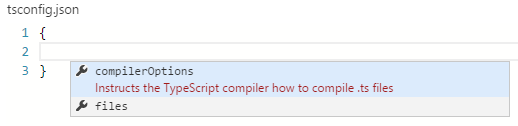
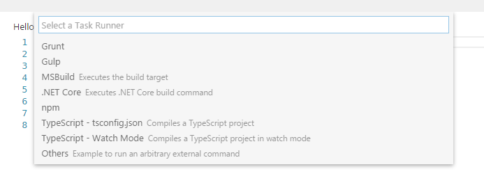
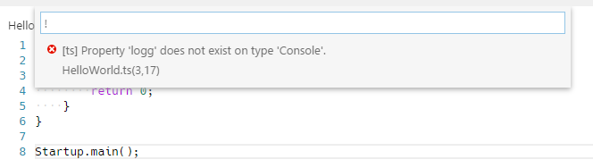
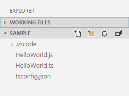
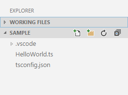

Editing TypeScript
TypeScript is a typed superset of JavaScript that compiles to plain JavaScript. It offers classes, modules, and interfaces to help you build robust components. A language specification can be found here.
TypeScript是JavaScript的类型超集，可编译为纯JavaScript。 它提供了类，模块和接口，可帮助您构建健壮的组件。说明文档地址：Github.
VS Code's TypeScript support can operate in two different modes:
VS Code的TypeScript支持可以在两种不同的模式下运行:
- File Scope: in this mode TypeScript files opened in Visual Studio Code are treated as independent units. As long as a file
a.tsdoesn't reference a fileb.tsexplicitly (either using /// reference directives or external modules) there is no common project context between the two files. 文件范围：在此模式下，在Visual Studio代码中打开的TypeScript文件被视为独立单元，只要
a.ts没有明确标识引用b.ts的情况，那么这两个文件就没有共享的项目上下文。Explicit Project: a TypeScript project is defined via a
tsconfig.jsonfile. The presence of such a file in a directory indicates that the directory is the root of a TypeScript project. The file itself lists the files belonging to the project as well as compiler options. Details about thetsconfig.jsonfile can be found here.- 明确项目：TypeScript项目是通过
tsconfig.json文件定义的，tsconfig.json文件所在的目录就是TypeScript项目的根目录。这个文件本身列出了属于项目的文件以及编译器选项。在这里可以找到有关tsconfig.json文件的详细信息。
Tip: We recommend that you use explicit projects over file scope projects. Since explicit projects list the files belonging to a project language, features like
Find All Referenceskb(editor.action.referenceSearch.trigger)consider the project scope and not the file scope only.提示： 我们推荐大家采用明确项目的方式，因为这种模式可以列出属于项目语言的文件，就像
Find All Referenceskb(editor.action.referenceSearch.trigger)这种功能需要考虑项目的范围而不仅仅是文件范围。
tsconfig.json
Typically the first step in any new TypeScript project is to add in a tsconfig.json file. This defines the TypeScript project settings such as the compiler options and the files that should be included. To do this, open up the folder where you want to store your source and add in a new file named tsconfig.json. Once in this file IntelliSense will help you along the way.
通常，任何新的TypeScript项目的第一步是添加tsconfig.json文件，这里面定义了TypeScript项目设置，例如编译器选项和应包含的文件，为此，打开你想储存源文件的文件夹并添加一个名为tsconfig.json文件。在这个文件内全程有智能提示(IntelliSense)帮助使用。

A simple tsconfig.json looks like this for ES5, CommonJS modules and source maps:
对于ES5，一个简单的tsconfig.json就像这样，CommonJS 模块 和 source maps：
{
"compilerOptions": {
"target": "es5",
"module": "commonjs",
"sourceMap": true
}
}
Now when you create a .ts file as part of the project we will offer up rich editing experiences and syntax validation.
现在，当您创建一个.ts文件作为项目的一部分时，我们将提供丰富的编辑体验和语法验证。
Transpiling TypeScript into JavaScript
将TypeScript转化为JavaScript
VS Code integrates with tsc through our integrated task runner. We can use this to transpile .ts files into .js files. Let's walk through transpiling a simple TypeScript Hello World program.
VSCode通过task runner集成tsc。我们可以使用它将.ts文件转换为.js文件，让我们通过一个简单的Hello World程序来了解下转化过程。
Step 1: Create a simple TS file
第一步：创建一个TS文件
Open VS Code on an empty folder and create a HelloWorld.ts file, place the following code in that file...
用VS Code打开一个空文件夹，并在文件夹下创建一个“HelloWorld.ts”文件，将以下代码块加入文件内 ...
class Startup {
public static main(): number {
console.log('Hello World');
return 0;
}
}
Startup.main();
Step 2: Create tasks.json
第二步：创建task.json文件
The next step is to set up the task configuration. To do this open the Command Palette with kb(workbench.action.showCommands) and type in Configure Task Runner, press kbstyle(Enter) to select it. This shows a selection box with templates you can choose from:
下一步就是设置任务配置文件。首先要用kb(workbench.action.showCommands)打开控制台写入Configure Task Runner，按下kbstyle(Enter)选择。然后会显示模版选择框，里面包含你可以选择的模板。

Select TypeScript - tsconfig.json. This will create a tasks.json file in the workspace .vscode folder.
选择 TypeScript - tsconfig.json。这将会在工作空间的.vscode目录下创建一个task.json文件。
The content of the tasks.json file looks like this:
task.json文件的内容像这样：
{
// See http://go.microsoft.com/fwlink/?LinkId=733558
// for the documentation about the tasks.json format
"version": "0.1.0",
"command": "tsc",
"isShellCommand": true,
"args": ["-p", "."],
"showOutput": "silent",
"problemMatcher": "$tsc"
}
Tip: While the template is there to help with common configuration settings, IntelliSense is available for the
tasks.jsonfile as well to help you along. Usekb(editor.action.triggerSuggest)to see the available settings.提示：该模板可以帮助您配置常见的设置，task.json内的智能提示将会一直生效，使用
kb(editor.action.triggerSuggest)去查看可用配置。
Under the covers we interpret tsc as an external task runner exposing exactly one task: the compiling of TypeScript files into JavaScript files. The command we run is: tsc -p .
在这里，我们将tsc作为扩展的task runner暴露了一个任务：将TypeScript文件编译为JavaScript文件。执行的命令为：tsc -p .
Tip: If you don't have the TypeScript compiler installed, you can get it here.
提示: 如果你没有安装TypeScript编译器，你可以从这里获取。
Step 3: Run the Build Task
第三步：执行构建任务
As this is the only task in the file, you can execute it by simply pressing kb(workbench.action.tasks.build) (Run Build Task). At this point you will see an additional file show up in the file list HelloWorld.js.
因为这是在文件的唯一任务，你可以直接按下kb(workbench.action.tasks.build) (执行构建任务)执行。这时候你将会看到文件列表增加了一个HelloWorld.js文件。
The example TypeScript file did not have any compile problems, so by running the task all that happened was a corresponding HelloWorld.js and HelloWorld.js.map file was created.
示例的TypeScript文件没有任何编译问题，所以通过运行该任务将会创建 HelloWorld.js 和 HelloWorld.js.map 文件。
If you have Node.js installed, you can run your simple Hello World example by opening up a terminal and running:
如果你安装了 Node.js，你可以打开一个的终端来运行你的Hello World示例，执行命令：
node HelloWorld.js
Tips You can also run the program using VS Code's Run/Debug feature. Details about running and debugging node apps in VS Code can be found here
提示: 你也可以使用VS Code's的执行/调试功能运行代码。这里可以找到有关在VS Code中运行和调试节点应用程序的详细信息。
Step 4: Reviewing Build Issues
第四步：检查构建问题
Unfortunately, most builds don't go that smoothly and the result is often some additional information. For instance, if there was a simple error in our TypeScript file, we may get the following output from tsc:
不幸的是，大多情况下构建都不会太顺利并返回一些额外信息。比如，如果一个简单的错误在我们的TypeScript文件里面， tsc 可能会使我们得到下面的输出：
HelloWorld.ts(3,17): error TS2339: Property 'logg' does not exist on type 'Console'.
This would show up in the output window (which can be opened using kb(workbench.action.output.toggleOutput)) and selecting Tasks in the output view dropdown. We parse this output for you and highlight detected problems in the Status Bar.
信息将会在输出窗口显示出来(它可以用kb(workbench.action.output.toggleOutput)打开)还可以在输出视图的下拉列表内选择任务，我们将会为您解析输出信息并在状态栏内将检测出的问题高亮显示。

You can click on that icon to get a list of the problems and navigate to them.
您可以点击图标获取问题列表并导航到它们。

You can also use the keyboard to open the list kb(workbench.action.showErrorsWarnings).
你也可以使用键盘打开问题列表kb(workbench.action.showErrorsWarnings)
Tip: Tasks offer rich support for many actions. Check the Tasks topic for more information on how to configure them.
提示: 任务为许多操作提供了丰富的支持，Tasks 将得到很多配置他们的信息.
Goto Symbol & Show All Symbols
跳转到符号 & 显示所有符号
kb(workbench.action.gotoSymbol): lists all defined symbols of the current open TypeScript and lets you navigate in it.
kb(workbench.action.gotoSymbol): 列出当前打开的TypeScript下所有已定义符号，并允许您在其中导航。
kb(workbench.action.showAllSymbols): lets you search all symbols defined in the current project or file scope. You need to have a TypeScript file open in the active editor.
kb(workbench.action.showAllSymbols): 允许您搜索当前项目或文件范围中定义的所有符号。您需要在活动编辑器中有一个打开的TypeScript文件。
Format Code
格式代码
kb(editor.action.format): formats the currently selected code, or the whole document if no code is selected.
kb(editor.action.format): 格式当前选中的代码，如果没有选中代码块将会格式整个文件。
JSDoc Support
JSDoc 支持
VS Code offers JSDoc support for TypeScript. Besides syntax coloring, we help you enter JSDoc comments. Simply type /** and it will auto insert the closing */. Pressing kbstyle(Enter) inside a JSDoc block will indent the next line and auto insert a *.
VS Code为TypeScript提供 JSDoc 支持。除了语法着色，还加入了 JSDoc 注释。只需要输入 /** 将会自动添加 */ 。在 JSDoc 块内按下 kbstyle(Enter) 将会在下一行自动缩进并且添加 *。
JavaScript Source Map Support
JavaScript Source Map 支持
TypeScript debugging supports JavaScript source maps. Enable this by setting the sourceMaps attribute to true in the project's launch configuration file launch.json. In addition, you can specify a TypeScript file with the program attribute.
TypeScript 调试支持JavaScript source maps 映射。通过将 launch.json 的 sourceMaps 属性设置为 true 开启此功能。另外，你通过 program 变量指定TypeScript文件。
To generate source maps for your TypeScript files, compile with the --sourcemap option or set the sourceMap property in the tsconfig.json file to true.
要为TypeScript文件生成source maps，需要使用 --sourcemap 选项编译 或者将 tsconfig.json 文件的 sourceMap 属性设置为 true 。
In-lined source maps (a source map where the content is stored as a data URL instead of a separate file) are also supported, although in-lined source is not yet supported.
内联 source maps (source map以URL存储在文件内而非单独的文件)也被支持，虽然尚未支持内联源。
Setting a different outDir for generated files
设置为生成的文件设置不同的输出目录
If generated (transpiled) JavaScript files do not live next to their source, you can help the VS Code debugger locate them by specifying the outDir directory in the launch configuration. Whenever you set a breakpoint in the original source, VS Code tries to find the generated source, and the associated source map, in the outDir directory.
如果生成的JavaScript文件不需要挨着源文件，你可以在launch.json中修改outDir属性指定不同的输出目录。每当你在TypeScript源代码中设置了一个断点，VS Code 会在outDir指定的目录下查找生成的JavaScript文件和关联的source map文件。
Hiding Derived JavaScript Files
隐藏派生的JavaScript Files
When you are working with TypeScript, you often don’t want to see generated JavaScript files in the explorer or in search results. VS Code offers filtering capabilities with a files.exclude setting (File > Preferences > Workspace Settings) and you can easily create an expression to hide those derived files:
当使用TypeScript时，通常不希望在文件资源管理器和搜索结果中看到生成的JavaScript文件。VS Code通过files.exclude setting (File > Preferences > Workspace Settings) 提供了文件过滤功能，您可以轻松创建表达式来隐藏这些派生文件。
"**/*.js": { "when": "$(basename).ts"}
This pattern will match on any JavaScript file (**/*.js) but only if a sibling TypeScript file with the same name is present. The file explorer will no longer show derived resources for JavaScript if they are compiled to the same location.
这个正则表达式将会匹配所有的JavaScript文件(**/*.js) 但仅当存在具有相同名称的兄弟TypeScript文件时，如果将JavaScript编译到同一位置，则文件资源管理器将不再显示JavaScript的派生资源。
 
Mixed TypeScript and JavaScript projects
TypeScript和JavaScript混合项目
It is now possible to have mixed TypeScript and JavaScript projects. To enable JavaScript inside a TypeScript project, you can set the allowJs property to true in the tsconfig.json.
现在可以使用混合的TypeScript和JavaScript项目。在TypeScript项目中启用JavaScript，你可以在 tsconfig.json 中设置 allowJs 属性为 true
Tip: The
tsccompiler does not detect the presence of ajsconfig.jsonfile automatically. Use the–pargument to maketscuse yourjsconfig.jsonfile, e.g.tsc -p jsconfig.json.提示：
tsc不会自动检测jsconfig.json文件是否存在，使用–p参数让tsc使用你的jsconfig.json文件，如tsc -p jsconfig.json。
Using Newer TypeScript Versions
使用新版本的TypeScript
VS Code ships with a recent stable version of TypeScript in the box. If you want to use a newer version of TypeScript, you can define the typescript.tsdk setting (File > Preferences > User/Workspace Settings) pointing to a directory containing the TypeScript tsserver.js and the corresponding lib.*.d.ts files. The directory path can be absolute or relative to the workspace directory. By using a relative path, you can easily share this workspace setting with your team and use the latest TypeScript version (npm install typescript@next). Refer to this blog post for more details on how to install the nightly builds of TypeScript.
VS Code 附带了最近稳定版本的TypeScript。如果你想要使用更新版本的TypeScript，你可以定义一个 typescript.tsdk 配置 (File > Preferences > User/Workspace Settings) 指向包含TypeScript tsserver.js 的目录和对应的 lib.*.d.ts 文件。 目录路径可以是工作空间目录的绝对路径或相对路径。 通过使用相对路径， 你可以轻松的跟你的团队分享此工作空间的配置去使用最新的TypeScript版本。 通过 blog post 获取更多关于如何安装TypeScript每日构建的细节。
Next Steps
下一步
OK, read on to find out about:
继续深入了解：
- JavaScript - we have several JavaScript specific features in VS Code
- Tasks - we used tasks to transpile your TS file. Read more to find out what else tasks can do
- Editing Evolved - dig into multi-cursor, snippets and more
- Debugging - we support debugging TypeScript Node.js apps
Common Questions
通常都会遇到的问题
Q: How do I resolve a TypeScript "Cannot compile external module" error?
问题：我怎么解决TypeScript "Cannot compile external module"的错误？
A: If you get that error, resolve it by creating a tsconfig.json file in the root folder of your project. The tsconfig.json file lets you control how Visual Studio Code compiles your TypeScript code. For more information, see the typescript.json overview.
回答 如果你遇到这个错误，可以通过在项目的根目录下创建一个 tsconfig.json 文件的方式解决。 tsconfig.json 文件让你控制VS Code怎样编译你的TypeScript代码。获取更多信息，请参阅typescript.json overview。
Due to a current limitation, you must restart VS Code after adding the tsconfig.json file.
由于当前有局限性，在添加 tsconfig.json 后你必需重启VS Code。